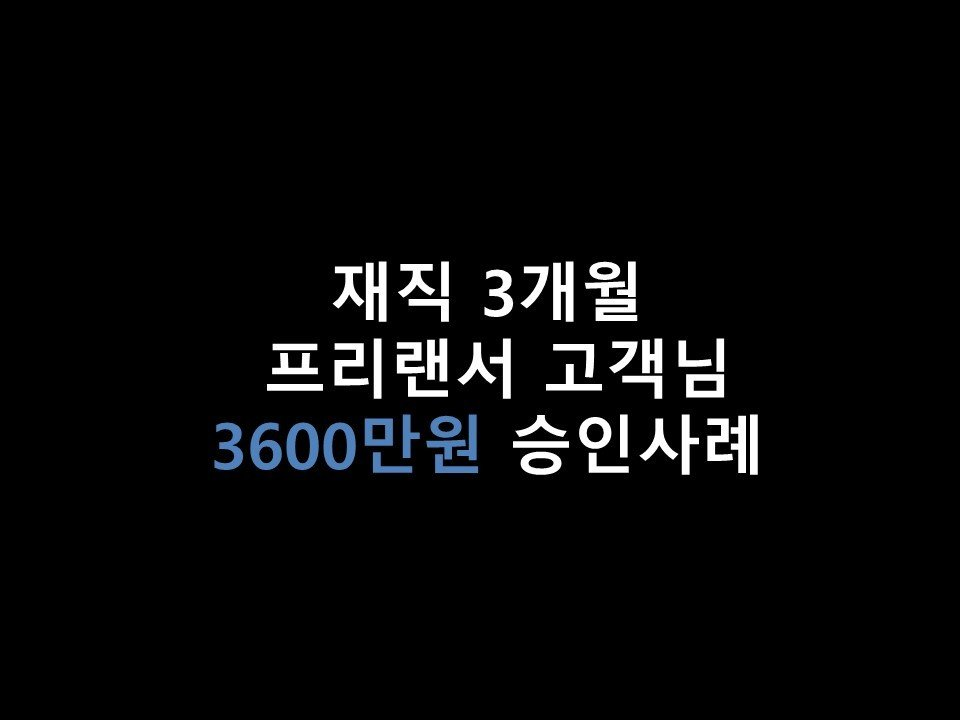
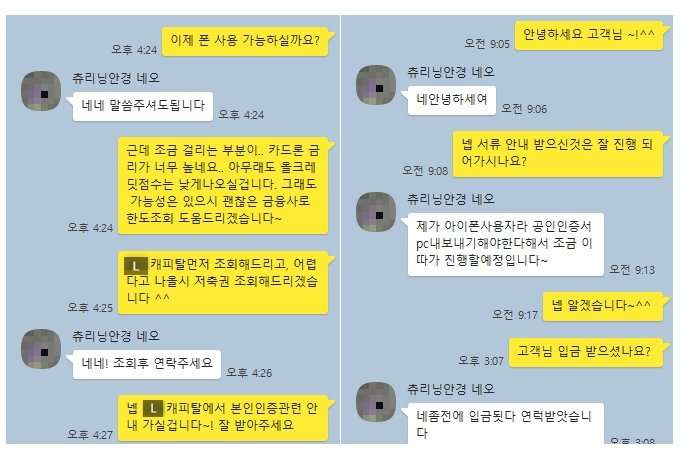

★재직 3개월 프리랜서 고객님 3600만원 승인사례★

안녕하세요 ^^ 오늘은 프리랜서 고객님의 대출 승인사례를 소개해드리겠습니다~
고객님께서는 현재 일반기업에서 프리랜서로 근무하고계셨으며, 재직기간은 3개월, 월 급여는 285만원가량 수령하고 계셨습니다~!
신용점수는 NICE기준 891점, 이용중이신 대출은 카드론 1000만원, 금리 17%를 이용중이셨습니다.
고객님께서는 카드론 대환, 추가자금을 목적으로 저희 뱅크앤론에 문의를 주셨습니다~^^
고객님 상황에서 조건이 잘 나올것같은 금융사 순으로 조회를 해드린결과, L캐피탈에서 3600만, 17.4%로 한도가 나오게 되었습니다. (금리가 높게 나오시는것으로 보아 올크레딧 신용점수가 낮을것으로 예상하였습니다.)
카드론과 금리는 별반 차이가 없었으나, 비교적 단기상환인 카드론과 비교해보았을때, L캐피탈의 상환기간은 72개월로 나와주어,
월 불입금 부담이 적어지신다는 장점이 있었고, 카드론 사용보다 캐피탈대출 사용이 신용에 훨씬 유리하기에,
L캐피탈로 안내드린결과 고객님께서는 만족해하시며 한도전액신청을 요청주셨습니다~ ^^
그리하여 고객님께서는 상담신청 이틀만에 대출승인을 받게 되셨습니다 ^^
아래는 저와 고객님의 카톡 대화내용입니다^^.
(고객님과는 통화를 더 많이해서 내용이 별로 없습니다 ^^;;)
감사합니다~ ^^
